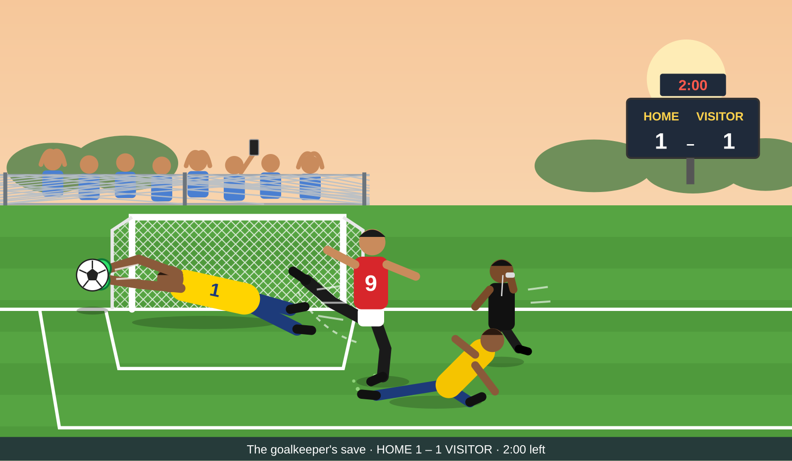
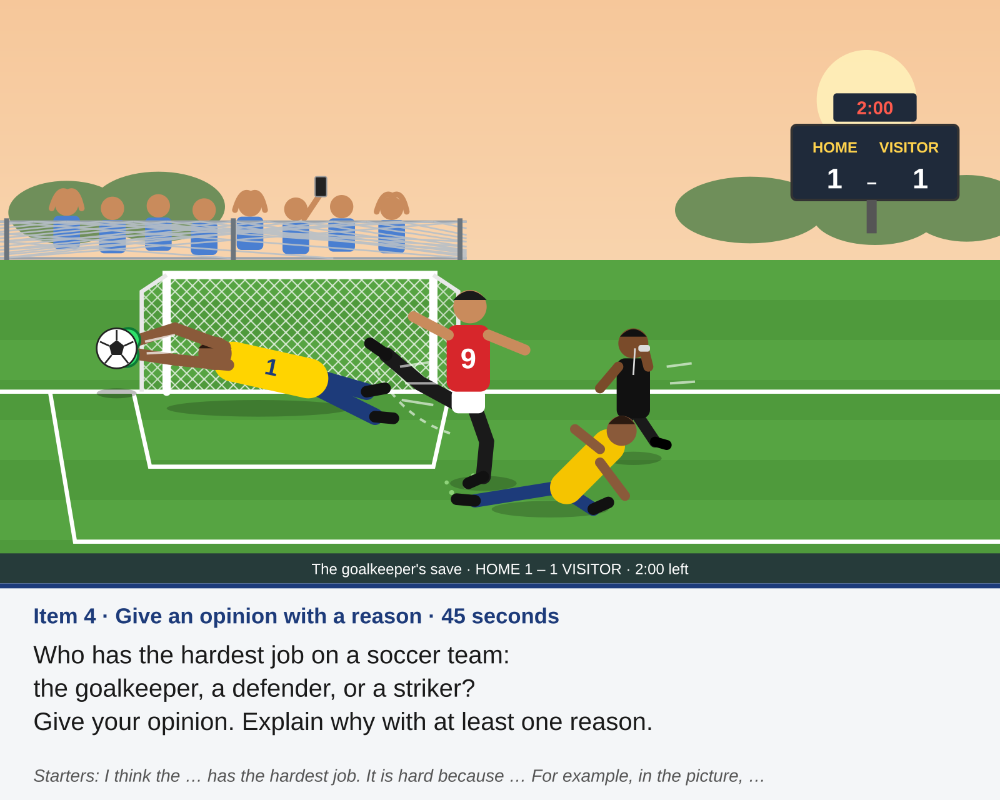

How it works Cómo funciona
- Read the question. Listen to it one time.
- Think for 10 seconds.
- Press Record and speak in English. Try to talk until the timer ends.
- You can record one more time if you want.
Tips: Speak in full sentences. It is okay to make mistakes — keep talking. Use the word bank. You can point to or draw on the picture while you talk.
Lee la pregunta, piensa 10 segundos, graba en inglés y habla hasta que termine el tiempo. Puedes grabar una vez más. Está bien cometer errores: sigue hablando.
The picture La imagen

Look at it for 30 seconds before you start. Who is in it? Where are they? What is happening? What will happen next?
Word bank Banco de palabras
Soccer words
Action words
Linking and opinion words
Practice the 5 questions Practica las 5 preguntas · use the timer, then record on Snorkl
Starters: I like / I don't like soccer because … · One time, I played / watched soccer with … · We were at … · It was fun / exciting because …
Never played or watched soccer? Tell me about a sport or game you like.
Starters: I see a … · There is / There are … · The goalkeeper is … · The player in red is … · On the left / On the right / Behind the fence, …
Starters: First, the player … · Then, the goalkeeper … · Next, I think … · The ball will … · If the goalkeeper saves it, …

Starters: I think the … has the hardest job. · It is hard because … · For example, in the picture, … · Some people think …, but I think …
A) Compare a penalty kick and a regular shot during play. How are they the same? How are they different? Which one is harder for the goalkeeper, and why?
B) Explain one rule of soccer to a new student (offside, corner kick, yellow card…). What is the rule? Why does the game need it?
Frames: Both … However, a penalty kick …, while a regular shot … · The rule says that … This rule is important because … Without it, …
How to record and turn in with Vocaroo Cómo grabar y entregar
- Open this page. Read Question 1.
- Open vocaroo.com in a new tab.
- Press the red record button. Say your answer in English. Talk until the time is done.
- Press stop. Listen. Not happy? Press record again.
- Press Save & Share. Press Copy to copy the link.
- Open the form. Paste the link in the box for Question 1.
- Do the same for Questions 2, 3, 4, and 5.
- Write your name and period. Press Submit.
Tips: Use headphones with a microphone. Speak in full sentences. Mistakes are okay — keep talking.
- Abre esta página. Lee la pregunta 1.
- Abre vocaroo.com en otra pestaña.
- Pulsa el botón rojo de grabar. Di tu respuesta en inglés. Habla hasta que termine el tiempo.
- Pulsa stop. Escucha. ¿No te gusta? Pulsa grabar otra vez.
- Pulsa Save & Share. Pulsa Copy para copiar el enlace.
- Abre el formulario. Pega el enlace en la caja de la pregunta 1.
- Haz lo mismo con las preguntas 2, 3, 4 y 5.
- Escribe tu nombre y periodo. Pulsa Submit.
Consejos: Usa audífonos con micrófono. Habla con oraciones completas. Los errores están bien: sigue hablando.
For the teacher scoring guide
Rubric · 1–4 in five ELPA21 domains
| Domain | 4 · Strong | 3 | 2 · Developing | 1 · Beginning |
|---|---|---|---|---|
| Task completion | Answers every part; adds a detail or example | Answers all parts, little extra | Answers part; drifts off topic | One or two words, or off prompt |
| Fluency | Speaks most of the time; natural pauses; self-corrects | Some pauses or restarts but keeps going | Long pauses; short bursts; stops early | Isolated words; long silence |
| Vocabulary | Soccer terms and academic words used precisely | Several soccer terms; some general words | Basic words; relies on word bank | Very limited; meaning often unclear |
| Grammar | Mostly accurate tenses; complex sentences (because, if, while) | Simple and some compound; errors don't block meaning | Mostly simple; frequent tense errors; meaning usually clear | Fragments; meaning hard to follow |
| Comprehension | Full understanding of prompt and picture; logical connections | Main question understood; one part missed | Partial; answers a nearby question | Does not appear to understand |
Score what the student says, not accent. Warm-up: Task completion and Fluency only. Item 5 replaces Item 4 for Challenge-lane students. Snorkl's AI score (0–4) follows the same scale; your score is final.
What strong vs. developing sounds like (Question 3)
Strong (Level 4 range):
"First, the player in red got the ball and shot it really hard. Then the goalkeeper dived to the left to block it. Right now his fingers are touching the ball, so maybe he can save it. I think next the ball will go out and the referee will give a corner kick, because the goalkeeper touched it last. It's one to one with two minutes left, so if the red team scores, they will probably win."
Developing (Level 2 range):
"First the player kick the ball. Then the goalie… he jump. The ball is… near the goal. Next, I think goal. The red team happy. Um… the score is one, one."
Strong: four steps, sequence words, past → present → future, prediction with because. Developing: order and two sequence words are there (Task 3, Comprehension 3), but short sentences with missing endings (Grammar 2), basic vocabulary (2), stops at ~25 seconds (Fluency 2), and no reason for the prediction.
Collecting Vocaroo links
Submissions land in the Jotform table (Name, Period, five links). Click a link to listen; score with the rubric. Vocaroo links expire after months without plays, so download any recording you want to keep for NBCT evidence (Vocaroo has a Download button on the share page).
Feedback stems
- "You used first, then, next in order. Next time, add because to your prediction."
- "Great soccer words: corner kick, referee. Try to talk until the timer ends."
- "You gave a clear opinion. Add one example from the picture to make it stronger."
- "I heard he kick. Remember: he kicks (now) or he kicked (before)."